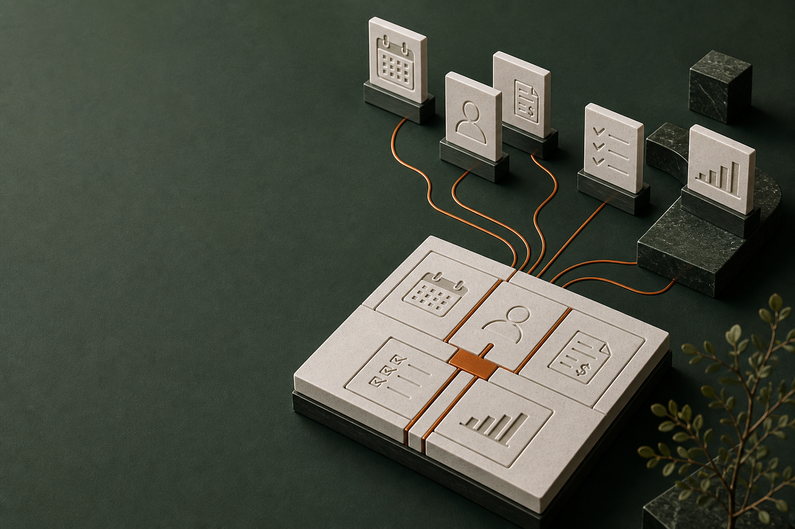

Pagas por utilizarla
Una cuota mensual o anual te da acceso. El precio puede cambiar con el plan, los usuarios o el consumo.

Una propuesta para transformar la operación de FGA Fitness, empezando por sus procesos.
Tu planteamiento actual parte de contratar aplicaciones existentes y conectarlas. Ese modelo se llama SaaS: software como servicio. En palabras sencillas, pagas una suscripción para usar software de un proveedor.
Contratas el acceso a una herramienta ya construida.
Tu equipo la utiliza para hacer su trabajo.
Una cuota mensual o anual te da acceso. El precio puede cambiar con el plan, los usuarios o el consumo.
La misma plataforma sirve a muchas empresas. La adaptas mediante sus opciones y las ampliaciones que admite.
Selecciona, configura y conecta las aplicaciones. Las funciones de base siguen dependiendo de cada proveedor.
Ha sido una forma práctica de digitalizar empresas. Ahora está cambiando lo que podemos pedirle al software.
La IA abre la posibilidad de que el software ejecute partes del trabajo. El valor se desplaza del acceso a una aplicación hacia el proceso que ayuda a resolver.
De las aplicaciones empresariales incorporarían agentes de IA para tareas específicas, frente a menos del 5% en 2025.
Ver la previsiónSu tesis plantea una nueva generación de empresas que ofrece trabajo resuelto mediante software, en lugar de vender únicamente la herramienta.
Leer el análisisNuestra lectura: diseñar hoy toda la transformación alrededor de aplicaciones estándar puede limitar lo que el negocio podrá hacer mañana. La transición también está ocurriendo dentro de los proveedores SaaS.
Las aplicaciones aportan funciones. Para que el negocio trabaje como necesitas, hay que definir el proceso completo. Cuando ese proceso no encaja en las herramientas, aparecen estas fricciones.
Una regla particular puede exigir adaptar tu manera de trabajar, contratar una extensión o añadir otra aplicación.
“Quiero hacerlo así. ¿El sistema lo permite?”Aunque cada aplicación funcione, alguien debe atender las excepciones, revisar las conexiones y comprobar que el trabajo continúe.
“Ya se registró aquí. ¿Quién lo pasa al siguiente paso?”A las suscripciones se suman la implementación, las conexiones, las ampliaciones y el trabajo necesario para mantenerlas.
“¿Cuánto nos cuesta realmente hacer funcionar todo?”Los límites del producto y las prioridades de cada proveedor condicionan qué puedes cambiar, cuándo y a qué coste.
“El negocio está listo para cambiar. ¿Y las herramientas?”El riesgo es digitalizar las tareas sin transformar la forma en que funciona el negocio.
Son límites a evaluar en el modelo, no un diagnóstico de la agencia ni de la implementación contratada por FGA.
Services as Software significa convertir procesos y servicios en trabajo que el sistema puede ejecutar y coordinar. En Zuriel lo hacemos definiendo primero tu operación y desarrollando una solución a su medida.
Acordamos qué debe ocurrir, quién responde y qué resultado esperamos. Ese diseño guía el sistema.
Desarrollamos las funciones y automatizaciones acordadas. El equipo interviene donde se necesita criterio y atención personal.
Las nuevas necesidades se convierten en desarrollos específicos, priorizados contigo según su valor.
Para FGA: un sistema comercial a medida.
Empezamos por el proceso comercial y dejamos definida la ruta para conectar y ampliar la operación.
La diferencia se entiende mejor viendo el mismo trabajo: qué resuelve cada herramienta y cómo puede funcionar un recorrido diseñado a medida.
La compra debe pasar de la tienda a las herramientas de atención y seguimiento.
Escenario ilustrativoLa venta y los datos del pedido quedan en la tienda.
Una conexión lleva los datos al registro del cliente.
La agenda debe recibir el servicio y el responsable correctos.
Los datos se reúnen para saber qué se vendió y qué se atendió.
Ejemplos de diseño sujetos al alcance. Una plataforma puede reunir varias funciones; un sistema a medida también puede conservar y conectar herramientas existentes.
| La decisión | SaaS · Software contratado | SaS · Enfoque Zuriel |
|---|---|---|
| Punto de partida | SaaSLas capacidades y opciones de aplicaciones ya construidas. | SaS con ZurielEl proceso que tu negocio necesita ejecutar. |
| Personalización | SaaSConfiguración y extensiones dentro de lo que admite cada producto. | SaS con ZurielDesarrollo de las reglas, funciones y pantallas específicas de FGA. |
| Resultado buscado | SaaSHerramientas implementadas para que el equipo trabaje. | SaS con ZurielUn proceso conectado, con trabajo ejecutado por el sistema y responsabilidades claras. |
| Evolución | SaaSCombinar opciones disponibles y mejoras de los proveedores. | SaS con ZurielPriorizar nuevos desarrollos según las necesidades de tu negocio. |
El desarrollo propio requiere inversión, infraestructura, mantenimiento y evolución. Comparamos el coste completo y el valor de cada alternativa al definir el alcance.
Una transformación con alcance claro, avances visibles y un equipo preparado para trabajar con su nuevo sistema.
Entendemos cómo necesitas operar, revisamos lo contratado y priorizamos qué resolver.
Proceso y prioridades definidosVes cómo funcionará tu sistema y acuerdas qué debe hacer antes de desarrollarlo.
Diseño y alcance aprobadosConstruimos por etapas y revisamos el resultado contigo y con quienes lo usarán.
Entregas y pruebas con el equipoPreparamos la puesta en marcha, la migración acordada y la formación de tu equipo.
Sistema, formación y documentaciónLa inversión, el plazo, las integraciones y las condiciones de entrega se definen a partir del alcance aprobado.
Revisamos el alcance y las decisiones tomadas. La propuesta de Zuriel identifica qué conservar, qué conectar y qué desarrollar a medida. Acordamos contigo cómo encaja el trabajo con los compromisos existentes.
No. Muchas plataformas siguen aportando valor y también incorporan IA. Lo que proponemos superar es una transformación limitada a contratar aplicaciones: el objetivo es que los procesos del negocio queden resueltos. Las herramientas útiles pueden formar parte de la solución.
No. Definimos qué puede ejecutar el sistema y dónde deben intervenir las personas. Zuriel usa IA para apoyar el desarrollo; cualquier agente incorporado a la operación debe tener una función, límites y validación acordados.
El diseño y desarrollo de un sistema a medida, con las funciones, automatizaciones, puesta en marcha y formación que acordemos. La propiedad, el soporte y la evolución quedan definidos en las condiciones comerciales.
Revisemos tu planteamiento actual y definamos qué puede cambiar con una solución construida a medida.